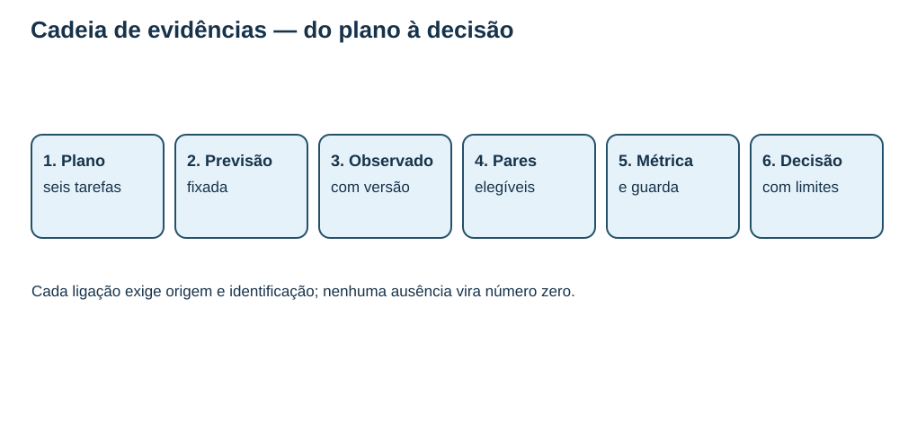
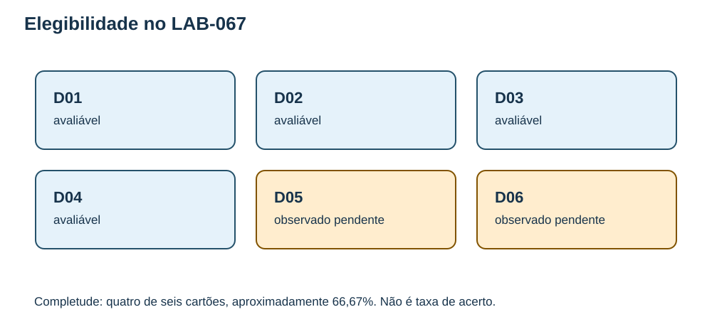
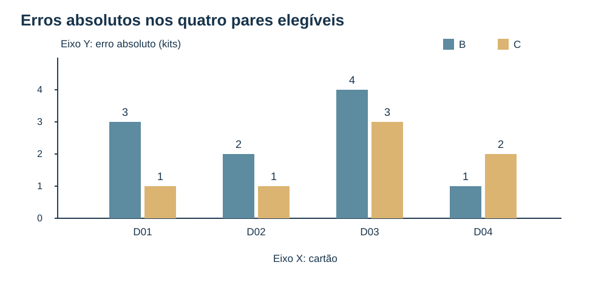
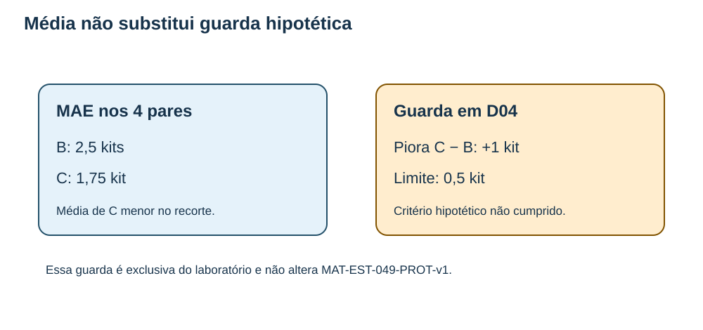
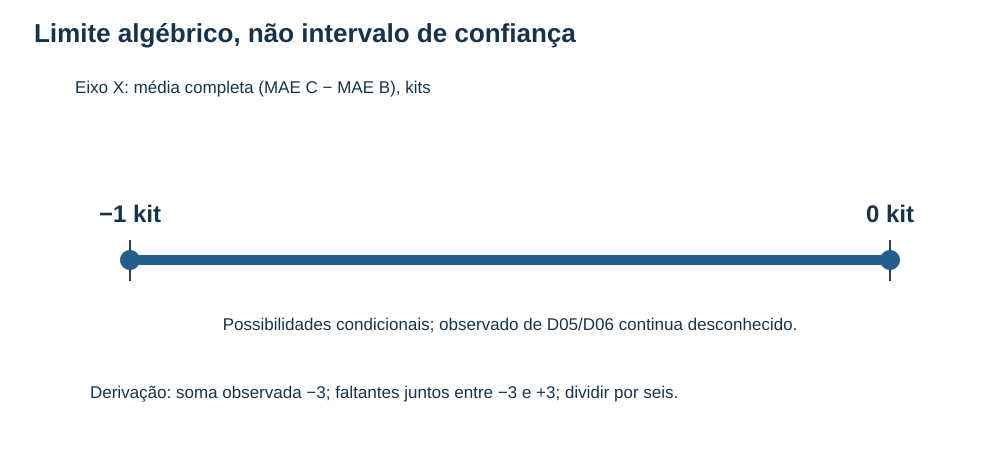
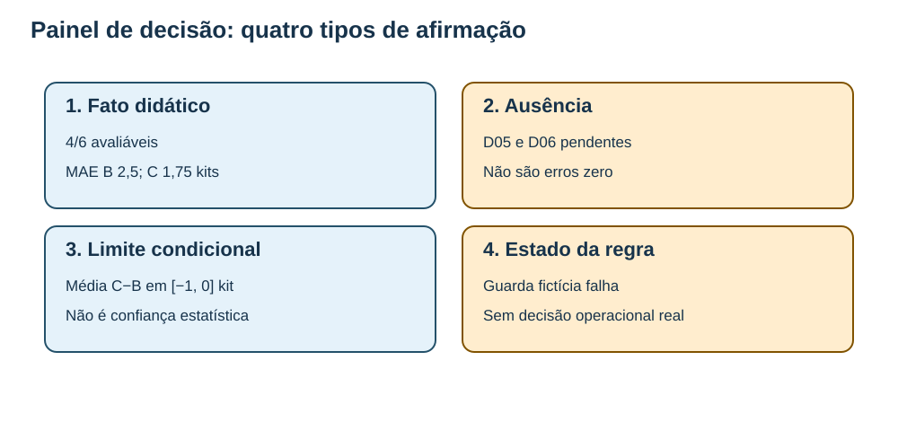

MAT-EST-067 — Transferência integradora da estatística temporal para decisões sob dados incompletos: leitura de evidências e exercícios inéditos
Natureza: aula, figuras e problemas autorais. Situação: produção editorial incremental exclusivamente local, integração histórica pendente. Estudo individual: não iniciado; nenhuma tentativa registrada. Anterior: MAT-EST-066. Próximo tópico: bloqueado até integração comprovada; MAT-EST-068 não iniciado.
1. Objetivos e pré-requisitos
Em três blocos de 25 a 45 minutos, transportar um método de avaliação temporal para um problema novo sem transportar os números históricos. Aprender a separar observabilidade de desempenho; calcular métricas e custos em pares elegíveis; distinguir média de critério impeditivo; e deduzir limites parciais mesmo quando faltam observações. O objetivo final é escrever uma conclusão proporcional à evidência.
Pré-requisitos: MAT-EST-047, MAT-EST-049, MAT-EST-053, MAT-EST-057, MAT-EST-058, MAT-EST-060, MAT-EST-065 e MAT-EST-066; média, módulo, porcentagem, previsão temporal e versão do dado. A desigualdade triangular será reconstruída na seção 7.
2. Por que dados incompletos exigem duas perguntas?
Imagine uma equipe que planeja uma quantidade de kits para seis ciclos. Só quatro demandas observadas estão disponíveis. Qual o erro médio de previsão nos quatro ciclos com observação? Quanto do plano foi realmente avaliável? A primeira pergunta divide a soma dos módulos dos erros por quatro; a segunda divide quatro por seis. Nenhuma autoriza transformar dois campos não preenchidos em demanda zero ou erro zero.
O mecanismo de ausência também importa. Talvez falte informação por atraso de registro, falha de recepção ou alguma associação com a própria demanda; não sabemos a causa neste exercício. Uma média entre casos disponíveis descreve primeiro aquele subconjunto. Para falar de seis casos ou de demanda futura, são necessárias hipóteses e evidências adicionais, enunciadas em vez de ocultas.

Figura 1 — Cadeia de evidências. Observe a sequência plano, previsão, observado, pareamento, métrica com guarda e decisão. Leitura sonora: cada número deve trazer origem e definição; uma média isolada não prova a validade de uma decisão.
3. Caso inteiramente novo e isolado: LAB-067
O laboratório autoral utiliza kits por ciclo, sempre com horizonte fictício h1, ou seja, um ciclo adiante. Os dados foram criados para ensinar; não são observações do município, de laboratório real ou do histórico t01–t22. Dentro do enunciado, B e C são previsões fixas antes dos observados informados. D05 e D06 têm previsão, mas seu observado não foi informado; a causa da ausência é desconhecida. Não adicionar essas linhas ao SANDBOX-057 nem ao TRANSFER-066.
| Cartão | B: previsão, kits | C: previsão, kits | Observado, kits | Situação |
|---|---|---|---|---|
| LAB-067-D01 | 21 | 23 | 24 | avaliável |
| LAB-067-D02 | 20 | 17 | 18 | avaliável |
| LAB-067-D03 | 26 | 33 | 30 | avaliável |
| LAB-067-D04 | 15 | 18 | 16 | avaliável |
| LAB-067-D05 | 22 | 21 | não informado | pendente |
| LAB-067-D06 | 25 | 23 | não informado | pendente |
Síntese por áudio: seis cartões estão planejados; somente D01 a D04 têm observado e podem produzir erros. D05 e D06 não têm erro calculável, ainda que possuam previsão. Escrever zero para esses erros seria afirmar falsamente que a previsão coincidiu com um valor observado.

Figura 2 — Elegibilidade. Observe quatro avaliáveis de seis planejados. Isso é completude, não taxa de acerto. A imagem nomeia os dois pendentes em vez de representá-los como zero.
4. Erro assinado, erro absoluto e denominadores
A convenção é erro = observado − previsão, pronunciado “erro é observado menos previsão”. Erro positivo significa subprevisão; negativo significa superprevisão. O erro absoluto é o módulo dessa diferença, sempre não negativo. A fórmula do erro absoluto médio é MAE = soma dos módulos / quantidade de pares avaliáveis; pronuncie “MAE é a média dos erros em módulo”. Sua unidade aqui é kit, não porcentagem.
Em D01, B produz 24−21=+3 kits e C produz 24−23=+1 kit. Em D02, B produz 18−20=−2 kits e C produz 18−17=+1 kit. Com a mesma regra:
| Cartão | Erro B, kits | Erro C, kits | Módulo B, kits | Módulo C, kits | Módulo C menos B, kits |
|---|---|---|---|---|---|
| D01 | +3 | +1 | 3 | 1 | −2 |
| D02 | −2 | +1 | 2 | 1 | −1 |
| D03 | +4 | −3 | 4 | 3 | −1 |
| D04 | +1 | −2 | 1 | 2 | +1 |
| Total | +6 | −3 | 10 | 7 | −3 |
Após a tabela: os módulos de B somam dez kits e os de C somam sete. As quatro diferenças emparelhadas C menos B são menos dois, menos um, menos um e mais um kit. A soma é menos três e a média é −3/4 = −0,75 kit. O sinal negativo favorece C nesses quatro pares, mas D04 é uma piora local para C.
Completude: 4/6 = 2/3 ≈ 66,67%. MAE B: 10/4 = 2,5 kits. MAE C: 7/4 = 1,75 kit. O denominador do MAE é quatro, não seis; utilizar seis equivaleria a atribuir erro zero aos pendentes. Com zero pares, completude poderia ser 0/6=0%, mas MAE seria não estimável, nunca zero.

Figura 3 — Erros absolutos nos pares. Observe a exceção D04: B erra um e C erra dois kits. A leitura por voz dos conjuntos é: módulos de B três, dois, quatro e um; módulos de C um, um, três e dois.
5. Custo não é erro, e média não revoga guarda
No novo exercício fixamos hipoteticamente a regra antes da análise: cada kit subprevisto custa três pontos; cada kit superprevisto custa um ponto. Logo, quando o erro é positivo, custo igual a três vezes o erro; quando negativo, custo igual ao módulo do erro. Os valores são pontos de custo fictício, não kits. Em D01 B custa nove e C custa três pontos; em D02 B custa dois e C custa três; em D03 B custa doze e C custa três; em D04 B custa três e C custa dois. Total de B: 26 pontos; média 26/4 = 6,5 pontos. Total de C: 11 pontos; média 11/4 = 2,75 pontos.
Outra regra exclusivamente hipotética de LAB-067, também estipulada antes de inspecionar os resultados do próprio exercício, diz que C só seria promovido se a piora individual de seu módulo sobre B não ultrapassasse 0,5 kit em nenhum cartão, além do desempenho agregado favorável. Em D04 a diferença é 2−1=+1 kit, superior a 0,5. Portanto a guarda fictícia falha, ainda que C apresente menores médias no recorte. É um raciocínio condicional; nenhuma decisão externa aconteceu.
Não confundir essa regra com o histórico MAT-EST-049-PROT-v1: nele há cinco de oito pares, MAE B 17,60 e C 8,36, custo B 51,20 e C 14,92; a piora de C em t19 é 19,2, acima da guarda dez, e C não foi promovido. Esses valores continuam apenas no histórico; a guarda 0,5 do LAB-067 não os modifica.

Figura 4 — Média e guarda. Observe que melhora agregada e violação de uma condição local podem coexistir. O gráfico não representa aprovação, implantação ou experiência operacional real.
6. Ausência, comparabilidade e versão
Antes de calcular o erro, confirme: a tarefa foi planejada? A previsão existe e foi fixada sem usar o alvo? O alvo corresponde à mesma origem e horizonte? Há observado informado e versão identificada? Uma previsão não emitida, um observado ainda ausente e um pareamento impossível são estados diferentes. Ausente não é zero, e observação retificada não deve apagar silenciosamente a versão preliminar ou duplicar o mesmo evento.
Uma razão de completude descreve disponibilidade, não precisão. Um recorte com faltas eventualmente associadas à magnitude do fenômeno pode diferir dos casos que faltam, mas não sabemos se isso acontece neste laboratório. Assim, os quatro erros são uma descrição legítima dos quatro cartões avaliáveis, não uma comprovação sobre uma população de demandas futuras. A seção sobre ausências de Forecasting: Principles and Practice explica por que investigar os mecanismos de dados faltantes é relevante na modelagem; suas explicações não são fonte dos números do caso autoral.
7. Limites parciais sem inventar observado
A ideia matemática mais profunda é que não precisamos conhecer um alvo y para limitar quanto duas distâncias até esse mesmo alvo diferem. Para previsões fixas B e C, a desigualdade triangular reversa fornece:
−|B−C| ≤ |y−C|−|y−B| ≤ |B−C|.
Leitura: a diferença entre o erro absoluto de C e o erro absoluto de B está entre menos e mais a distância entre as previsões B e C. Derivação: pela desigualdade triangular, |y−C| ≤ |y−B|+|B−C|. Trocando B com C, obtemos |y−B| ≤ |y−C|+|B−C|. Reorganizando as duas relações, aparecem o limite superior e o inferior. Intuitivamente, mover a previsão de B até C por d kits muda sua distância a qualquer alvo, no máximo, em d kits.
Em D05, as previsões B22 e C21 distam um kit: a diferença de erros absolutos C menos B estará em [−1,+1] kit. Em D06, B25 e C23 distam dois: a diferença estará em [−2,+2] kits. A soma conhecida das diferenças em D01–D04 é −3. Logo, se os seis observados um dia fossem fornecidos como números válidos do mesmo alvo e as previsões não fossem modificadas, a soma completa ficaria entre −3−1−2=−6 e −3+1+2=0. Dividindo por seis, a diferença média completa C menos B ficaria entre −1 e zero kit.
Esse é um limite algébrico condicional, não intervalo de confiança, não probabilidade e não valor observado de D05 ou D06. Sob essas condições fechadas, C não teria MAE superior ao de B nos seis pares e poderia empatar. Mas a guarda de D04 já falhou e os seis exemplos artificiais não validam desempenho externo. Isso não autoriza promoção.
Os extremos são alcançáveis em hipóteses, sem preencher o registro: se yD05 fosse no mínimo 22 e yD06 no mínimo 25, as diferenças ausentes seriam +1 e +2, produzindo empate. Se yD05 fosse no máximo 21 e yD06 no máximo 23, seriam −1 e −2, produzindo média −1 kit. A conclusão interessante é que a diferença emparelhada é limitada, mas o erro absoluto individual em um alvo desconhecido não recebe limite superior só com essas previsões: y pode ser arbitrariamente alto. Não chamar a faixa de calibração ou previsão probabilística.

Figura 5 — Limite de diferença. Eixo horizontal: diferença média MAE C menos MAE B, em kits. Observe os extremos menos um e zero; a faixa é uma dedução das previsões fixas, e não uma coleção de novas medições.
8. Transferência de método, nunca mistura de coortes
O projeto contém objetos com finalidades diferentes. O histórico fictício t01–t22 e MAT-EST-049-PROT-v1 são uma série. t23–t25 continuam sem emissão ou observação autenticada; MAT-EST-056-PROT-SUC-v1 é somente proposta editorial local; t26–t33 têm zero pares e MAE não estimável. SANDBOX-057 é uma sala isolada com oito cartões, apenas S01/S02 avaliáveis, erros B [+4,−2] e C [+3,−5], MAE B três e C quatro unidades e custo médio sete pontos para ambos. EXEMPLO-V, EXEMPLO-Z e TRANSFER-066 não fornecem observações adicionais a essas séries. TRANSFER-066 permanece com R01/R02 avaliáveis, R03/R04 pendentes, MAE B 2,5 e C 1 unidade, custo B 4,5 e C 2 pontos, completude 50%. LAB-067 é mais um exercício distinto, não um apêndice estatístico desses grupos.
K65-01–K65-11 possuem uma única fotografia didática F0; não há série de fotografias que autorize tendência. G1/G2 estão checked_local; G3–G6, pending; G7/G8 e P01–P10, not_performed; A64-01–06 são ensaios locais e A64-07 não ocorreu. Reunir esses estados em uma pontuação única apagaria definições e denominadores diferentes. Nenhum deles é alterado por esta aula.
Vídeo complementar após esta seção: How to spot a misleading graph — Lea Gaslowitz, TED-Ed. Inglês, aproximadamente quatro minutos. A página pública foi encontrada em 29/09/2026; não foi realizada reprodução integral, teste de legendas ou teste do Edge. Ele reforça a leitura crítica de escala e recorte. Ao assistir, pergunte se um gráfico de quatro casos pode receber título que promete resultados sobre seis planejados. O vídeo é apoio; toda a explicação necessária está nesta aula.
9. Comunicado proporcional à evidência
Modelo de conclusão responsável sobre o caso didático: “Em LAB-067, quatro de seis cartões estão avaliáveis: 66,67% de completude. Neles, o MAE é 2,5 kits em B e 1,75 kit em C. Os custos médios fictícios são 6,5 e 2,75 pontos, respectivamente. Em D04 C piorou um kit em relação a B, acima da guarda hipotética de 0,5 kit, logo a condição de promoção do exercício falhou. D05 e D06 seguem sem observado; sob as hipóteses de previsões fixas, peso igual e futura avaliação dos seis pares, a diferença média C menos B estaria entre −1 e zero kit. Não houve decisão operacional, inferência populacional, sincronização ou publicação.”
O texto nomeia população, horizonte, unidade, denominador, regra, ausência, limite e estado editorial. Um bom relatório separa fato fornecido, falta, dedução condicional e decisão permitida pela regra.

Figura 6 — Matriz de decisão. Observe quatro tipos distintos de afirmação. Leitura em voz alta: valores calculados não substituem observações faltantes; uma dedução condicional não comprova resultado futuro, e um pacote editorial não é implantação.
10. Aplicações e erros frequentes
Em Saúde Pública, separar atendimento planejado de atendimento realmente registrado evita fabricar taxas com registros vazios; não estamos apresentando qualquer dado epidemiológico. Em Química, ausência de uma leitura não é concentração zero. Em Geografia, município sem indicador não pode ser rotulado como indicador igual a zero. Em Redação, toda afirmação quantitativa precisa explicitar universo, corte e limitações. São analogias, não bases reais importadas para LAB-067.
Erros recorrentes incluem dividir MAE por seis quando só quatro pares são válidos; cancelar sinais para calcular erro absoluto; misturar pontos e kits; alterar guarda após observar resultado; declarar mecanismo de ausência sem evidência; chamar limite algébrico de intervalo probabilístico; misturar t18–t22, SANDBOX-057, TRANSFER-066 e LAB-067; e afirmar que teste automatizado equivale a aprovação humana, publicação ou estudo concluído.
11. Prática e revisão espaçada
No primeiro bloco, explique a cadeia de evidências e refaça a classificação dos seis cartões. No segundo, reconstrua a tabela, os custos e o teste de guarda. No terceiro, derive os limites algébricos com exemplos e redija o comunicado sem extrapolação. Resolva as 36 questões autorais de exercicios.md, divididas em aprendizagem, consolidação, estilo vestibular e reteste. Não há reprodução de questão oficial. Só consulte gabarito-comentado.md após tentar.
Uma revisão pode ocorrer um, sete e trinta dias após estudo efetivo, não após a criação do arquivo. Classificar dificuldades como conteúdo, interpretação, cálculo, distração, memória, estratégia ou tempo exige tentativa real. Este material não altera progresso individual.
12. Resumo curto para ouvir
Seis cartões estão planejados e quatro possuem observação. A completude é quatro sextos; o MAE usa os quatro pares e não os seis planejados. Nos quatro, B tem MAE 2,5 kits e C 1,75 kit. Os custos fictícios são 6,5 pontos para B e 2,75 para C. C apresenta melhora média mas viola a guarda fictícia de meio kit em D04, porque sua piora ali é um kit. Para D05 e D06, não inventamos observado; usamos a desigualdade triangular reversa para limitar a diferença entre erros absolutos. Se os seis cartões do enunciado vierem a ser avaliados com previsões fixas e mesmo peso, a diferença média C menos B ficará entre menos um e zero kit. Esse limite não corrige a guarda nem demonstra eficácia futura. Todas as outras coortes permanecem isoladas, e produzir material editorial não significa que alguém estudou.
Fontes e proveniência
- Base interna: checkpoint textual MAT-EST-066 e seus materiais textuais acessíveis; o ZIP original não pôde ser extraído nesta sessão.
- Rob J. Hyndman e George Athanasopoulos, Forecasting: Principles and Practice, 5.8 Avaliação de previsões, 5.10 Validação cruzada temporal e 13.9 Valores ausentes e atípicos. Apoio conceitual externo, não origem dos números artificiais.
- TED-Ed — How to spot a misleading graph, página localizada; reprodução integral não realizada.
- Todos os seis SVG e as 36 questões são produção autoral deste incremento.